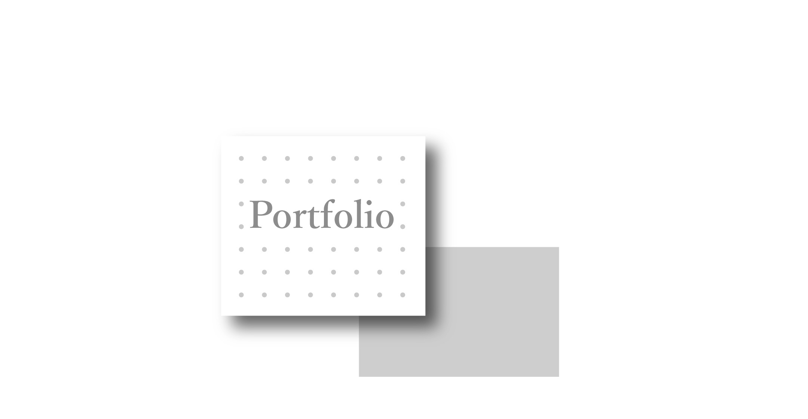
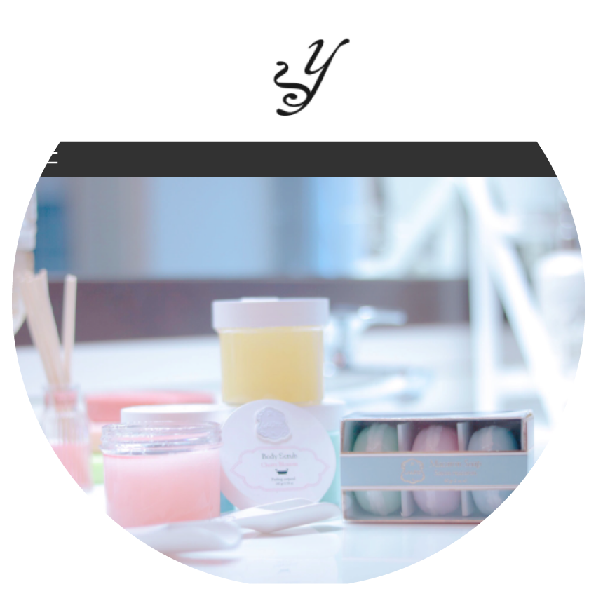

Profile
吉田哲
他業界から27歳でエンジニア転職しました。RPA開発、WEBコーダーを経験し現在大手ECサイトプロジェクト参画中です。
使用可能言語：Html、CSS、Javascript、Python
Private work
-
※Chrome推奨
音声認識で動く落語家スズメです。オリジナルキャラクターです。
-

架空のLPとして作成しました。ハンバーガーメニューとレスポンシブ用の習作です。デザインは化粧品メーカーをイメージしました。
コードはこちら（Github）
Project
【概要】
ECサイトにて運用参画および新システム移行業務担当
【担当範囲】
毎週更新、イレギュラー更新、その他
【主な業務内容】
最初の１年間システム移行に伴いデータ整理、新CMSのデバッグを行いました。新システムリリース後はトップページと各ジェンダー更新を担当となり現在に至ります。
【概要】
システム移行に伴うコーディング
【担当範囲】
コーディング
【主な業務内容】
システム移行に伴い、自動で移行できない領域のファイルを新フォーマットにコーディングしました。作業は打ち込み完了後にGitで開発サーバーへpushし確認完了後に本番反映という流れで行いました。
【概要】
ECサイトにてコーダーとして参画
【担当範囲】
画像作成・コーディング
【主な業務内容】
ECサイトの運用チームに運用コーダーとして参画させていただいてました。毎月のセールやキャンペーン時には新規LPの作成、運用更新の際は画像加工、コーディングまでを担当していました。
最後までご覧いただきありがとうございます。どうぞ、よろしくお願いいたします。